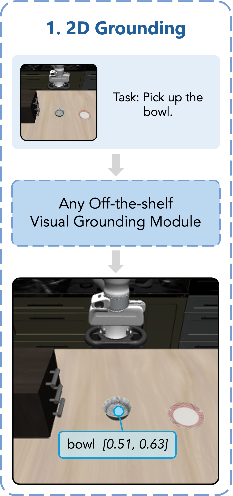
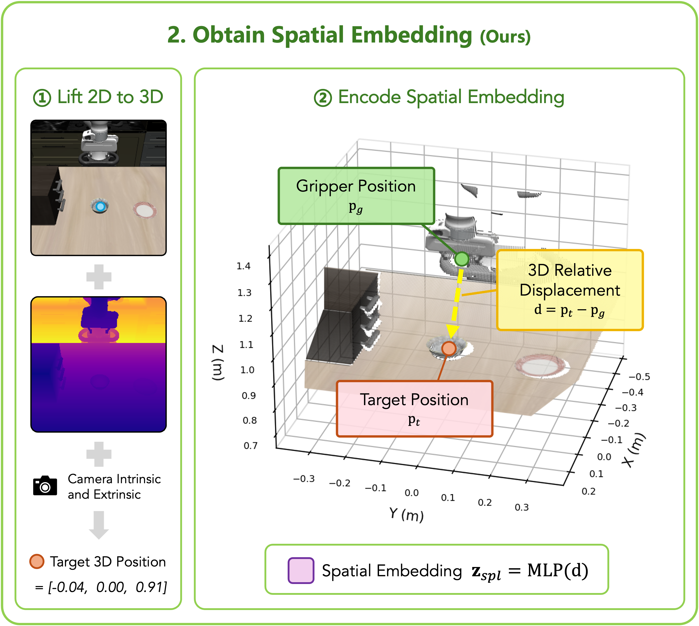
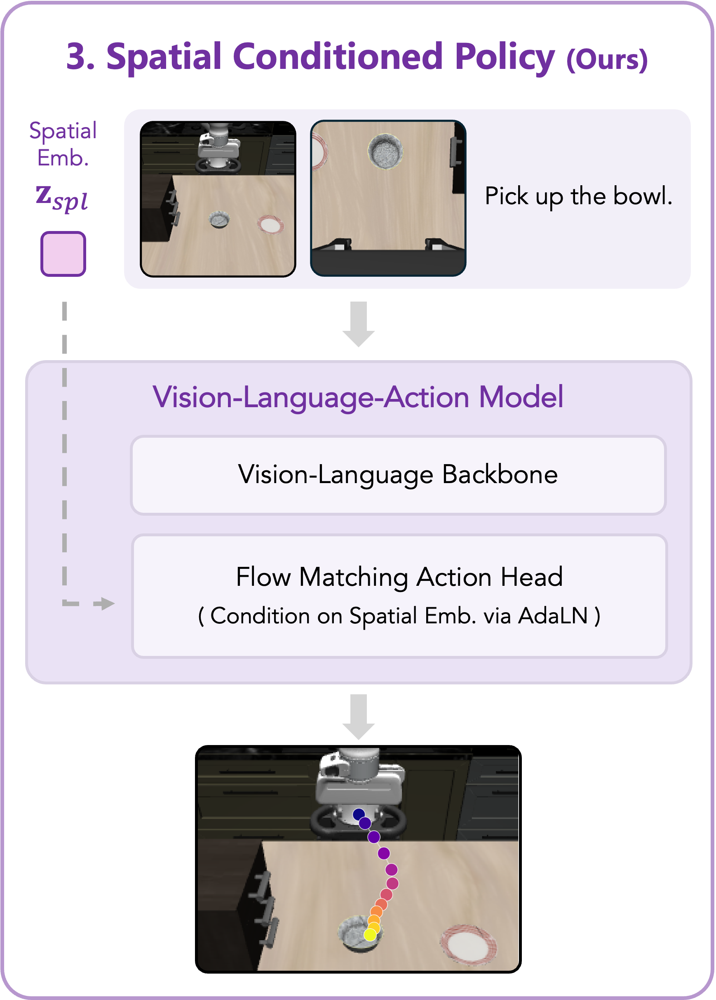

Shiang-Feng Tsai1 · Jin-Cheng Jhang1 · Yen-Ling Tai2 · Jia-Hong Lai1,* · Shih-Yun Wong1,* · Kang-Tung Hsu1,* · Yi-Ting Chen2 · Min Sun1
1 National Tsing Hua University 2 National Yang Ming Chiao Tung University
* Equal contribution
Vision-Language-Action (VLA) models leverage large-scale vision-language pretraining for flexible robot manipulation, yet at test time they remain brittle to changed object positions and to familiar scenes paired with different instructions. A growing family of methods addresses this brittleness by supplying the policy with grounding signals, such as 2D pixel coordinates for object localization and placement.
However, we find that how the grounding signal is represented and injected matters more than the signal itself. In this work, we propose a lightweight module that represents the grounding signal in 3D and injects the resulting embedding directly into the action head. The module is a two-layer MLP and requires no changes to the VLA backbone or pretraining pipeline, yet it yields substantially larger gains than language- or visual-prompting alternatives.
On LIBERO-PRO, our method improves the average success rate of GR00T-N1.6 from 31.2 to 77.5 under task perturbation and from 28.1 to 60.2 under position perturbation. Comparable gains are also achieved for π0.5, demonstrating that the mechanism is backbone-agnostic across VLAs with diffusion-based action heads. We further validate the practical applicability with real-world experiments. Together, these results support our central finding: lifting adequate 2D grounding into 3D and injecting it into the action head enables spatial and instance-level task generalization in VLAs.
Our method makes two decisions about one grounding point: represent it in 3D, and inject it directly into the action head.



The instruction names a target; a grounding module returns one 2D point for the current sub-goal. Nothing in this stage is ours — a detector, a segmentation mask, or a VLM all work.
"Pick up the bowl." → bowl @ [0.51, 0.63]
Depth and camera parameters lift that pixel into the robot base frame, so the signal lives in the same space the action head predicts in. We keep only the gripper-to-target displacement and encode it with a two-layer MLP.
d = pt − pg → zspatial = MLP(d)
In the DiT action head, AdaLN normally conditions each block on the timestep alone. We add the spatial embedding to the timestep embedding, so the denoising process is also conditioned on the grounding signal.
γ, β = Linear(ztime + zspatial)
In our real-world experiments, the 2D point comes from an off-the-shelf VLM (Qwen3-VL-4B) and depth from a consumer RGB-D camera (Intel RealSense D435).
| Method | In distribution | Task perturbation | Position perturbation |
|---|---|---|---|
| Controlled pairs — with vs. without our module | |||
| π0.5 | 85.0 | 32.5 | 27.5 |
| π0.5 + Ours | 91.3 | 78.8 | 61.3 |
| GR00T-N1.6 | 68.8 | 3.8 | 3.8 |
| GR00T-N1.6 + Ours | 92.5 | 63.8 | 66.3 |
| Controlled comparison of representation and injection — GR00T-N1.6 | |||
| + 2D via Text Prompt | 87.5 | 5.0 | 7.5 |
| + 2D via Visual Prompt | 88.8 | 6.3 | 5.0 |
| + 2D via AdaLN | 87.5 | 18.8 | 16.3 |
| + 3D via Text Prompt | 86.3 | 5.0 | 5.0 |
We fine-tune two backbones, π0.5 and GR00T-N1.6, on the same 69 pick-and-place tasks (LIBERO-Object, LIBERO-Spatial and 49 tasks from LIBERO-90), once as-is and once with our module. Every model is then tested under three conditions:
The original LIBERO test: scenes and instructions as seen in training.
The target is swapped for another object already in the scene.
Objects start at different positions.
| LIBERO | LIBERO-PRO | ||||||||
|---|---|---|---|---|---|---|---|---|---|
| Method | IN DISTRIBUTION | Task perturbation | Position perturbation | ||||||
| Object | Spatial | Avg | Object | Spatial | Avg | Object | Spatial | Avg | |
| Reference open-source VLAs | |||||||||
| OpenVLA | 88.4 | 84.7 | 86.6 | 1.8 | 46.4 | 24.1 | 0.0 | 0.0 | 0.0 |
| π0 | 98.8 | 96.8 | 97.8 | 10.0 | 54.4 | 32.2 | 0.2 | 11.6 | 5.9 |
| MolmoAct | 95.4 | 87.0 | 91.2 | 9.2 | 31.6 | 20.4 | 4.2 | 0.2 | 2.2 |
| FALCON* | 98.8 | 97.6 | 98.2 | 5.0 | 48.2 | 26.6 | 0.6 | 12.2 | 6.4 |
| Controlled pairs — same backbone and data, with vs. without our module | |||||||||
| π0.5 | 94.8 | 96.0 | 95.4 | 20.0 | 54.6 | 37.3 | 36.0 | 58.0 | 47.0 |
| π0.5 + Ours | 97.0 | 98.2 | 97.6 | 70.6 | 81.2 | 75.9 | 75.0 | 69.4 | 72.2 |
| Δ vs. baseline | +2.2 | +2.2 | +2.2 | +50.6 | +26.6 | +38.6 | +39.0 | +11.4 | +25.2 |
| GR00T-N1.6 | 93.8 | 93.2 | 93.5 | 10.0 | 52.4 | 31.2 | 29.2 | 27.0 | 28.1 |
| GR00T-N1.6 + Ours | 99.6 | 92.4 | 96.0 | 70.4 | 84.6 | 77.5 | 79.4 | 41.0 | 60.2 |
| Δ vs. baseline | +5.8 | −0.8 | +2.5 | +60.4 | +32.2 | +46.3 | +50.2 | +14.0 | +32.1 |
*Reproduced by us with the same 69-task training data.
Same 2D target point for every variant; only its representation and injection methods differ.
Both choices are needed. A 2D point stays limited however it is injected, even through the same AdaLN pathway as ours. A 3D point written into the text prompt barely helps either. Only 3D with direct injection delivers the large gain.
Every method retrained on only the 20 original tasks (LIBERO-Object + LIBERO-Spatial), compared with 69.
A better design beats more data. More training tasks help every method, so data diversity does matter. Still, ours trained on just 20 tasks (dashed line) outperforms every other method trained on 69.
Both panes always show the same two models: GR00T-N1.6 fine-tuned as-is, and with our module. Both succeed in distribution. Under task perturbation, the baseline ignores the new target and repeats the motion it memorized for this scene; under position perturbation, it reaches for where the target used to be. With our module, the policy follows the instruction and finds the moved object.
@inproceedings{
tsai2026direct,
title={Direct Action-Head Injection of A Grounded 3D Point Unlocks Spatial and Task Generalization},
author={Tsai, Shiang-Feng and Jhang, Jin-Cheng and Tai, Yen-Ling and Lai, Jia-Hong and Wong, Shih-Yun and Hsu, Kang-Tung and Chen, Yi-Ting and Sun, Min},
booktitle={10th Annual Conference on Robot Learning},
year={2026},
}